library(usmap)
library(data.table)
library(devtools)
library(kableExtra)
library(purrr)
library(ggplot2)
library(magrittr)
library(httr)
library(here)
library(sf)
library(crsuggest)
library(mapview)
library(leaflet)
library(RColorBrewer)5 Census geographic data and applications in R
Load the Required R Packages from CRAN:
Load the packages ‘deandevl/RcensusPkg’, ‘deandevl/RplotterPkg’ and ‘deandevl/RspatialPkg’.
devtools::install_github('deandevl/RcensusPkg')
devtools::install_github('deandevl/RplotterPkg')
devtools::install_github('deandevl/RspatialPkg')5.1 Basic usage of tigris (RCensusPkg::)
Create and assign an empty output directory path for acquiring downloaded shapefiles from the Census Bureau.
output_dir <- file.path(here(), "shapefiles")The function RcensusPkg::tiger_states_sf() (and the other similar RcensusPkg::tiger_ functions) perform three tasks:
Download a shapefile from the US Census Bureau.
Read the shapefile where it is converted to a simple feature object(sf) using the
sf::st_read()function.Return the
sfobject to the caller and optionally display on the console information about the sf.
Get the simple feature object that contains the boundary geometries for US states.
Download from the US Census Bureau the shapefile of US states and return and plot the resulting simple feature object(sf):
states_sf <- RcensusPkg::tiger_states_sf(resol = "20m", output_dir = output_dir)Reading layer `tl_2020_us_state' from data source
`D:\Code_R\published\Techniques-in-Acquisition-Computation-and-Display-of-Census-Bureau-Data\shapefiles'
using driver `ESRI Shapefile'
Simple feature collection with 56 features and 14 fields
Geometry type: MULTIPOLYGON
Dimension: XY
Bounding box: xmin: -179.2311 ymin: -14.60181 xmax: 179.8597 ymax: 71.43979
Geodetic CRS: NAD83Warning in file.remove(f): cannot remove file
'D:/Code_R/published/Techniques-in-Acquisition-Computation-and-Display-of-Census-Bureau-Data/shapefiles/tl_2020_us_county.zip',
reason 'Permission denied'RspatialPkg::get_geom_sf(
sf = states_sf,
title = "US State Boundaries",
sf_fill = "white",
hide_x_tics = TRUE,
hide_y_tics = TRUE,
panel_border_color = "white",
panel_color = "white"
) 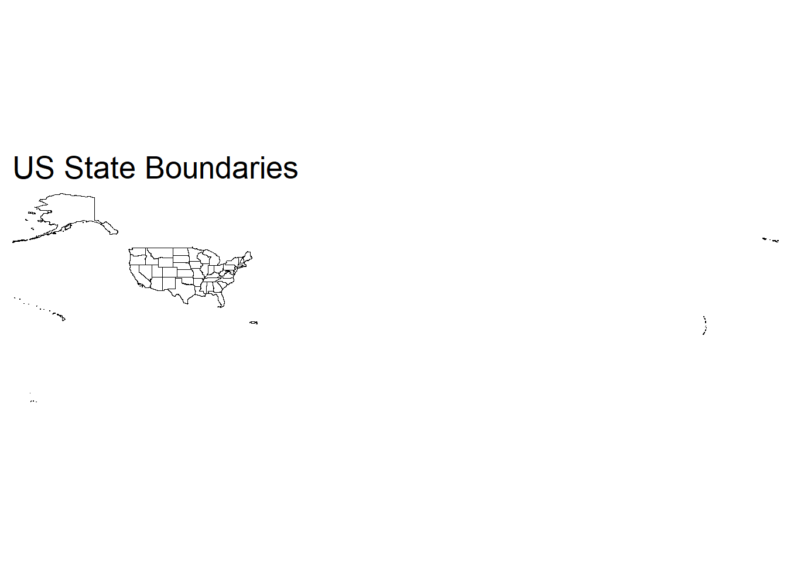
Other Census datasets may be available by state or by county within the state. In some cases, this subsetting is optional; in other cases, state and/or county arguments will be required.
Show the counties of New Mexico.
Download the shapefile for all US counties from the Census Bureau and return simple feature(sf) object for New Mexico:
nm_fips <- usmap::fips(state = "new mexico")
nm_express <- expression(STATEFP == nm_fips)
nm_counties_sf <- RcensusPkg::tiger_counties_sf(
resol = "20m",
express = nm_express,
sf_info = F,
output_dir = output_dir
)Warning in file.remove(f): cannot remove file
'D:/Code_R/published/Techniques-in-Acquisition-Computation-and-Display-of-Census-Bureau-Data/shapefiles/tl_2020_us_county.zip',
reason 'Permission denied'RspatialPkg::get_geom_sf(
sf = nm_counties_sf,
sf_fill = "white",
hide_x_tics = TRUE,
hide_y_tics = TRUE,
panel_border_color = "white",
panel_color = "white"
)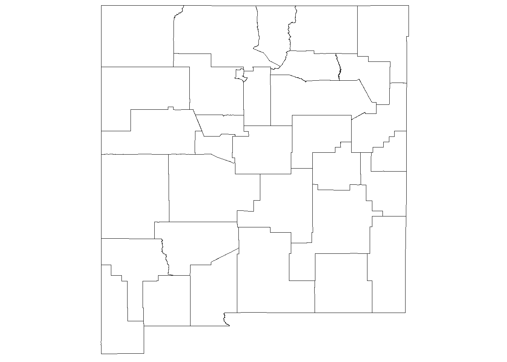
Statistical entities and geographic features are similarly accessible if they exist in the TIGER/Line database.
Show the Census tract boundaries of Los Alamos, New Mexico.
Download the county’s shapefile and return its simple feature object(sf):
nm_los_alamos_fips <- usmap::fips(state = "new mexico", county = "los alamos")
nm_fips <- substr(nm_los_alamos_fips, 1, 2)
los_alamos_fips <- substr(nm_los_alamos_fips, 3, 5)
la_tracts_express <- expression(COUNTYFP == los_alamos_fips)
la_tracts_sf <- RcensusPkg::tiger_tracts_sf(
state = nm_fips,
express = la_tracts_express,
sf_info = F,
output_dir = output_dir
)Warning in file.remove(f): cannot remove file
'D:/Code_R/published/Techniques-in-Acquisition-Computation-and-Display-of-Census-Bureau-Data/shapefiles/tl_2020_us_county.zip',
reason 'Permission denied'RspatialPkg::get_geom_sf(
sf = la_tracts_sf,
sf_fill = "white",
hide_x_tics = TRUE,
hide_y_tics = TRUE,
panel_border_color = "white",
panel_color = "white"
)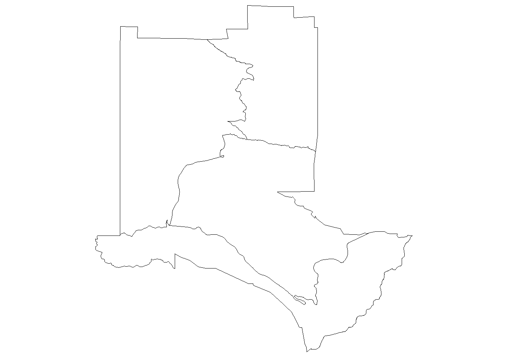
Several geographic features are available as well, including roads and water features.
Show water features of Los Alamos, New Mexico.
Download the shapefile for area water in Los Alamos, New Mexico and return its simple feature object(sf):
nm_los_alamos_fips <- usmap::fips(state = "new mexico", county = "los alamos")
nm_fips <- substr(nm_los_alamos_fips, 1, 2)
los_alamos_fips <- substr(nm_los_alamos_fips, 3, 5)
los_alamos_area_water_sf <- RcensusPkg::tiger_water_sf(
state = nm_fips,
county = los_alamos_fips,
entity = "area",
sf_info = F,
output_dir = output_dir
)Warning in file.remove(f): cannot remove file
'D:/Code_R/published/Techniques-in-Acquisition-Computation-and-Display-of-Census-Bureau-Data/shapefiles/tl_2020_us_county.zip',
reason 'Permission denied'RspatialPkg::get_geom_sf(
sf = los_alamos_area_water_sf,
sf_fill = "white",
hide_x_tics = TRUE,
hide_y_tics = TRUE,
panel_border_color = "white",
panel_color = "white"
)5.1.1 Understanding tigris(RcensusPkg) and simple features
As mentioned earlier, sf represents vector spatial data much like a regular R data frame, but with a special column, geometry, that represents the shape of each feature. When a simple features object is printed, the information above the data frame gives some additional geographic context to the coordinates in the geometry column. This includes a geometry type, a bounding box, and a coordinate reference system (CRS) definition.
5.1.1.1 Points
Acquire landmark point data for the District of Columbia.
Download the shapefile for DC landmarks and return the simple feature landmark geometries:
dc_fips <- usmap::fips(state = "dc")
dc_landmarks_sf <- RcensusPkg::tiger_landmarks_sf(
state = dc_fips,
sf_info = F,
output_dir = output_dir
)Warning in file.remove(f): cannot remove file
'D:/Code_R/published/Techniques-in-Acquisition-Computation-and-Display-of-Census-Bureau-Data/shapefiles/tl_2020_us_county.zip',
reason 'Permission denied'dc_landmarks_sf <- data.table::as.data.table(dc_landmarks_sf) %>%
na.omit(., cols = "FULLNAME") %>%
sf::st_as_sf(.)RspatialPkg::get_geom_sf(
sf = dc_landmarks_sf,
sf_shape = 1,
sf_size = 4,
hide_x_tics = TRUE,
hide_y_tics = TRUE,
panel_border_color = "white",
panel_color = "white"
)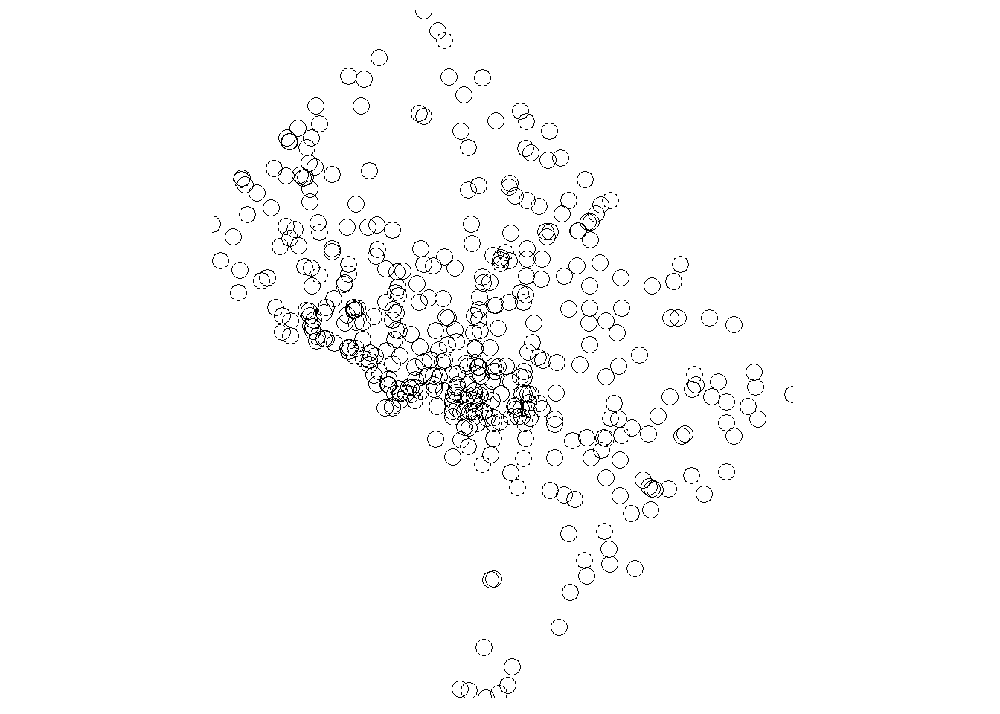
5.1.1.2 Lines
Acquire road line data for the District of Columbia.
Download the roads shapefile and return the roads simple feature object(sf) for DC:
dc_fips <- usmap::fips(state = "dc")
dc_roads_sf <- RcensusPkg::tiger_roads_sf(
state = dc_fips,
entity = "state_roads",
sf_info = F,
output_dir = output_dir
)Warning in file.remove(f): cannot remove file
'D:/Code_R/published/Techniques-in-Acquisition-Computation-and-Display-of-Census-Bureau-Data/shapefiles/tl_2020_us_county.zip',
reason 'Permission denied'RspatialPkg::get_geom_sf(
sf = dc_roads_sf,
hide_x_tics = TRUE,
hide_y_tics = TRUE,
panel_border_color = "white",
panel_color = "white"
)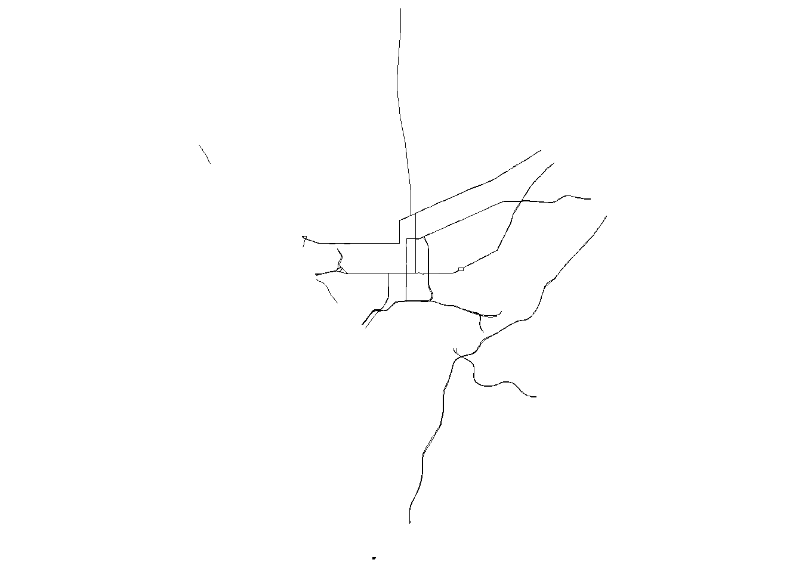
5.1.1.3 Polygons
Acquire the Census Bureau’s block group geometries for the District of Columbia.
Get the block groups simple feature for DC:
dc_fips <- usmap::fips(state = "dc")
dc_block_groups_sf <- RcensusPkg::tiger_block_groups_sf(
state = dc_fips,
sf_info = F,
output_dir = output_dir
)Warning in file.remove(f): cannot remove file
'D:/Code_R/published/Techniques-in-Acquisition-Computation-and-Display-of-Census-Bureau-Data/shapefiles/tl_2020_us_county.zip',
reason 'Permission denied'RspatialPkg::get_geom_sf(
sf = dc_block_groups_sf,
hide_x_tics = TRUE,
hide_y_tics = TRUE,
panel_border_color = "white",
panel_color = "white",
sf_fill = "white"
)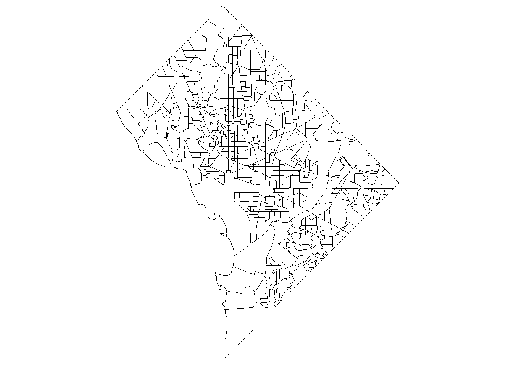
5.2 Plotting geographic data
5.2.1 ggplot2 and geom_sf()
Map both the tracts and block groups of Los Alamos, NM side by side.
Get the simple feature tracts for Los Alamos:
nm_los_alamos_fips <- usmap::fips(state = "new mexico", county = "los alamos")
nm_fips <- substr(nm_los_alamos_fips, 1, 2)
los_alamos_fips <- substr(nm_los_alamos_fips, 3, 5)
la_tracts_express <- expression(COUNTYFP == los_alamos_fips)
la_tracts_sf <- RcensusPkg::tiger_tracts_sf(
state = nm_fips,
express = la_tracts_express,
general = T,
sf_info = F,
output_dir = output_dir
)Warning in file.remove(f): cannot remove file
'D:/Code_R/published/Techniques-in-Acquisition-Computation-and-Display-of-Census-Bureau-Data/shapefiles/tl_2020_us_county.zip',
reason 'Permission denied'RspatialPkg::get_geom_sf(
sf = la_tracts_sf
)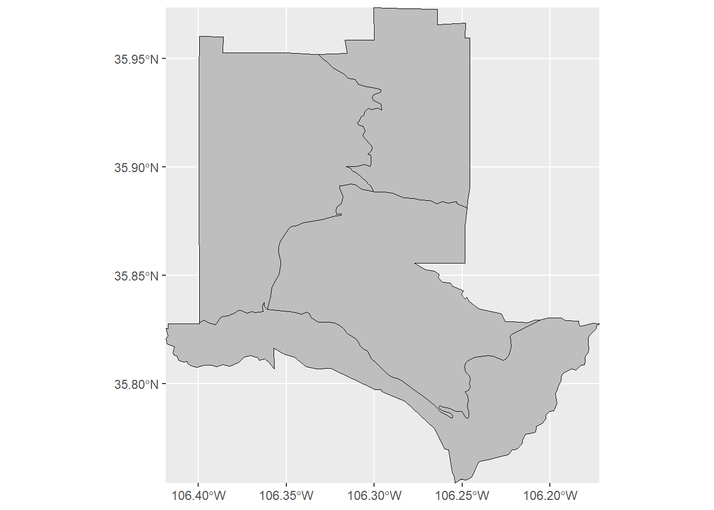
Remove the background panels, grid lines, and tic marks.
la_tracts_plot <- RspatialPkg::get_geom_sf(
sf = la_tracts_sf,
hide_x_tics = TRUE,
hide_y_tics = TRUE,
panel_border_color = "white",
panel_color = "white"
)
la_tracts_plot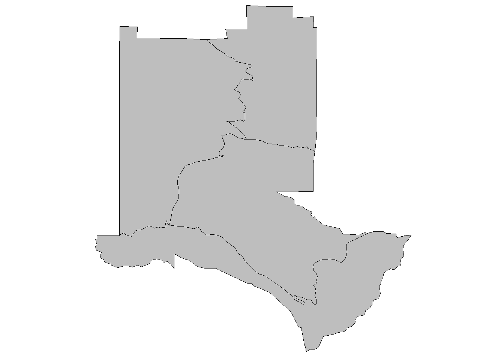
Get the simple feature block groups for Los Alamos:
la_blockgroups_express <- expression(COUNTYFP == los_alamos_fips)
la_blockgroups_sf <- RcensusPkg::tiger_block_groups_sf(
state = nm_fips,
express = la_blockgroups_express,
general = T,
sf_info = F,
output_dir = output_dir
)Warning in file.remove(f): cannot remove file
'D:/Code_R/published/Techniques-in-Acquisition-Computation-and-Display-of-Census-Bureau-Data/shapefiles/tl_2020_us_county.zip',
reason 'Permission denied'la_blockgroups_plot <- RspatialPkg::get_geom_sf(
sf = la_blockgroups_sf,
hide_x_tics = TRUE,
hide_y_tics = TRUE,
panel_border_color = "white",
panel_color = "white"
)
la_blockgroups_plotMap both the tracts and block groups of Los Alamos, NM side by side for comparison.
layout <- list(
plots = list(tracts = la_tracts_plot, block_groups = la_blockgroups_plot),
rows = c(1, 1),
cols = c(1, 2)
)
enumerations_plot <- RplotterPkg::multi_panel_grid(
layout = layout,
title = "Enumerations for Los Alamos, NM",
plot_titles = c("Census tracts","Block groups"),
cell_height = 9
)
enumerations_plot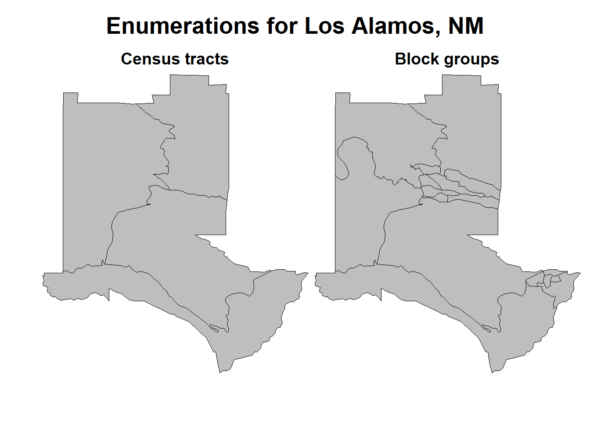
5.2.2 Interactive viewing with mapview
Visualize the geometries of la_tracts_sf using mapview::mapview().
mapview::mapview(la_tracts_sf)Figure 5.11: Interactive view of Los Alamos, NM
5.3 tigris (RcensusPkg) workflows
5.3.1 TIGER/Line and cartographic boundary shapefiles
Additional options to RcensusPkg include downloading generalized cartographic boundary shapefiles.
Map both the TIGER/Line and cartographic boundary(general) version of Michigan’s counties.
Get the TIGER/Line shapefile counties for Michigan and return a simple feature(sf):
mich_fips <- usmap::fips(state = "michigan")
mich_express <- expression(STATEFP == mich_fips)
mich_counties_sf <- RcensusPkg::tiger_counties_sf(
express = mich_express,
general = F,
sf_info = F,
output_dir = output_dir
)Warning in file.remove(f): cannot remove file
'D:/Code_R/published/Techniques-in-Acquisition-Computation-and-Display-of-Census-Bureau-Data/shapefiles/tl_2020_us_county.zip',
reason 'Permission denied'mich_counties_plot <- RspatialPkg::get_geom_sf(
sf = mich_counties_sf,
hide_x_tics = T,
hide_y_tics = T,
panel_border_color = "white",
panel_color = "white"
)Get the generalized version of Michigan counties shapefile and return a simple feature(sf):
mich_fips <- usmap::fips(state = "michigan")
mich_express <- expression(STATEFP == mich_fips)
mich_counties_general_sf <- RcensusPkg::tiger_counties_sf(
express = mich_express,
general = TRUE,
sf_info = F,
output_dir = output_dir
)Warning in file.remove(f): cannot remove file
'D:/Code_R/published/Techniques-in-Acquisition-Computation-and-Display-of-Census-Bureau-Data/shapefiles/tl_2020_us_county.zip',
reason 'Permission denied'mich_counties_general_plot <- RspatialPkg::get_geom_sf(
sf = mich_counties_general_sf,
hide_x_tics = T,
hide_y_tics = T,
panel_border_color = "white",
panel_color = "white"
)Map both the TIGER/Line and cartographic boundary files side-by-side for comparison.
layout <- list(
plots = list(tiger = mich_counties_plot, general = mich_counties_general_plot),
rows = c(1,1),
cols = c(1,2)
)
mich_cty_tiger_general_plot <- RplotterPkg::multi_panel_grid(
layout = layout,
plot_titles = c("TIGER/Line","Cartographic boundary")
)
mich_cty_tiger_general_plot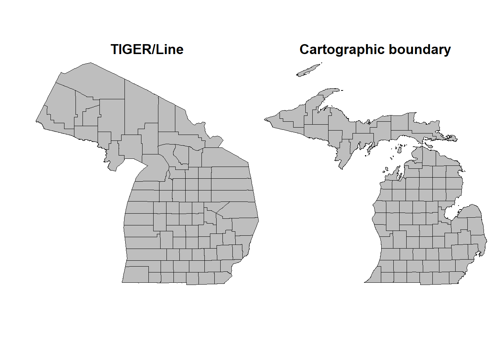
As the cartographic boundary file shows islands and a distinct coastline, it will be a better option for most thematic mapping projects.
When general = TRUE in RcensusPkg’s tiger related functions you can also set the resol = parameter to three different levels of resolution, “500k” (the default), “5m”, and “20m”.
5.3.2 Caching tigris data
No scripts for this section
5.3.3 Understanding yearly differences in TIGER/Line files
Map the tracts of Tarrant County, Texas across years 1990, 2000, 2010, 2020.
years <- c(1990, 2000, 2010, 2020)
set_crs <- c(4326, 4326, 4326, 4326)
vars <- c("CO", "COUNTY", "COUNTY", "COUNTYFP")
tx_tarrant_fips <- usmap::fips(state = "texas", county = "tarrant")
tx_fips <- substr(tx_tarrant_fips, 1, 2)
tarrant_fips <- substr(tx_tarrant_fips, 3, 5)
build_plot <- function(id, years, set_crs, vars, state_fips, county_fips, output_dir){
tx_tracts_sf <- RcensusPkg::tiger_tracts_sf(
state = state_fips,
vintage = years[[id]],
general = T,
set_crs = set_crs[[id]],
output_dir = output_dir,
sf_info = F
)
col_name <- vars[[id]]
tarrant_tracts_sf <- data.table::as.data.table(tx_tracts_sf) %>%
.[.[[col_name]] == county_fips, ] %>%
sf::st_as_sf(.)
tarrant_tracts_plot <- RspatialPkg::get_geom_sf(
sf = tarrant_tracts_sf,
hide_x_tics = T,
hide_y_tics = T
)
title <- paste0(years[[id]], ": ", nrow(tarrant_tracts_sf), " tracts")
return(list(title = title, plot = tarrant_tracts_plot))
}
plot_lst <- 1:4 |>
purrr::map(\(x) build_plot(
x,
years = years,
set_crs = set_crs,
vars = vars,
state_fips = tx_fips,
county_fips = tarrant_fips,
output_dir = output_dir
))
plot_flat_lst <- purrr::flatten(plot_lst)
titles_lst <- purrr::keep(plot_flat_lst, names(plot_flat_lst) == "title")
plots_lst <- purrr::keep(plot_flat_lst, names(plot_flat_lst) == "plot")
layout <- list(
plots = plots_lst,
rows = c(1, 1, 2, 2),
cols = c(1, 2, 1, 2)
)
RplotterPkg::multi_panel_grid(
layout = layout,
plot_titles = as.vector(titles_lst)
)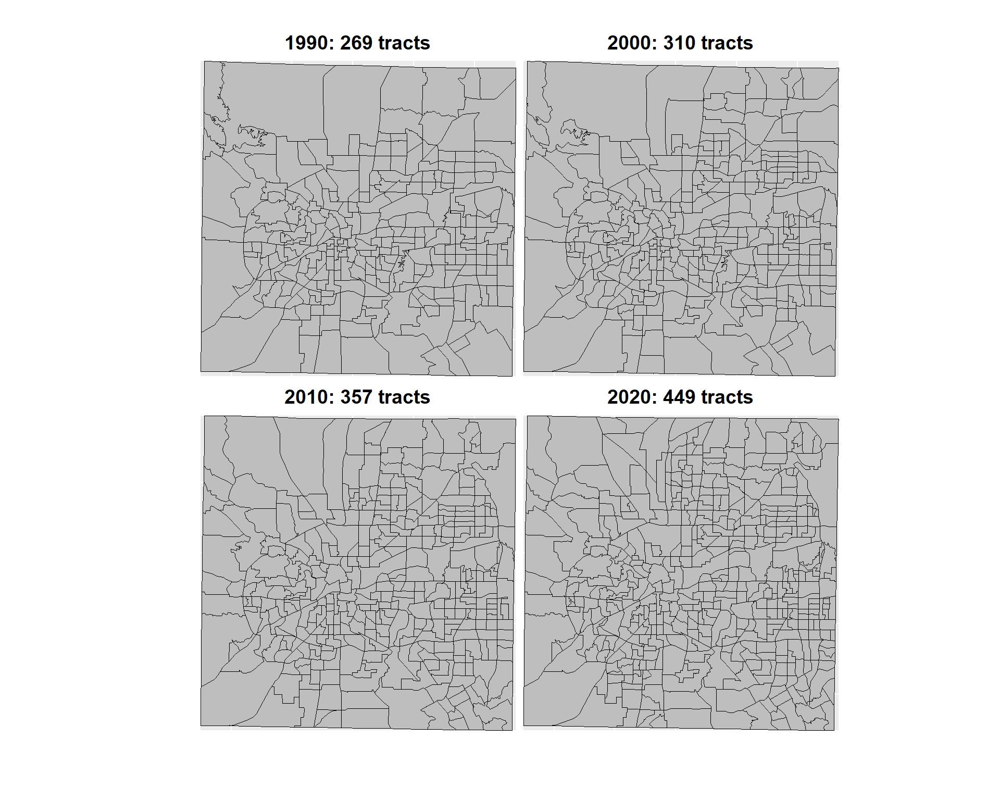
5.3.4 Combining tigris datasets
No scripts for this section
5.4 Coordinate reference systems
For geographic data to appropriately represent locations in mapping and spatial analysis, they must be referenced to some model of the Earth’s surface correctly. In simpler terms - a data model of the state of Florida should represent where Florida is actually located relative to other locations.
Retrieve the default coordinate reference system (i.e. crs NAD83) of Florida counties simple feature using sf::st_crs().
florida_fips <- usmap::fips(state="florida")
florida_express <- expression(STATEFP == florida_fips)
florida_counties_sf <- RcensusPkg::tiger_counties_sf(
express = florida_express,
general = T,
sf_info = F,
output_dir = output_dir
)Warning in file.remove(f): cannot remove file
'D:/Code_R/published/Techniques-in-Acquisition-Computation-and-Display-of-Census-Bureau-Data/shapefiles/tl_2020_us_county.zip',
reason 'Permission denied'print(sf::st_crs(florida_counties_sf))Coordinate Reference System:
User input: NAD83
wkt:
GEOGCRS["NAD83",
DATUM["North American Datum 1983",
ELLIPSOID["GRS 1980",6378137,298.257222101,
LENGTHUNIT["metre",1]]],
PRIMEM["Greenwich",0,
ANGLEUNIT["degree",0.0174532925199433]],
CS[ellipsoidal,2],
AXIS["latitude",north,
ORDER[1],
ANGLEUNIT["degree",0.0174532925199433]],
AXIS["longitude",east,
ORDER[2],
ANGLEUNIT["degree",0.0174532925199433]],
ID["EPSG",4269]]All Census Bureau datasets are stored in the “NAD83” geographic coordinate system, which refers to the North American Datum of 1983.
5.4.1 Using the crsuggest package
Thousands of projected CRS’s exist - each that are appropriate for minimizing data distortion in a specific part of the world. … the
crsuggestpackage (K. Walker 2021a) can help narrow down the choices.
Show the suggestions for florida_counties_sf.
florida_counties_suggest_df <- crsuggest::suggest_crs(florida_counties_sf)| crs_code | crs_name | crs_type | crs_gcs | crs_units |
|---|---|---|---|---|
| 6439 | NAD83(2011) / Florida GDL Albers | projected | 6318 | m |
| 3513 | NAD83(NSRS2007) / Florida GDL Albers | projected | 4759 | m |
| 3087 | NAD83(HARN) / Florida GDL Albers | projected | 4152 | m |
| 3086 | NAD83 / Florida GDL Albers | projected | 4269 | m |
| 6443 | NAD83(2011) / Florida West (ftUS) | projected | 6318 | us-ft |
| 6442 | NAD83(2011) / Florida West | projected | 6318 | m |
| 3517 | NAD83(NSRS2007) / Florida West (ftUS) | projected | 4759 | us-ft |
| 3516 | NAD83(NSRS2007) / Florida West | projected | 4759 | m |
| 2882 | NAD83(HARN) / Florida West (ftUS) | projected | 4152 | us-ft |
| 2778 | NAD83(HARN) / Florida West | projected | 4152 | m |
The “best choice” is the CRS “Florida GDL Albers” coordinate reference system, which is available with four different variations on the NAD1983 datum.
It appears that “NAD83(HARN) / Florida GDL Albers” with crs code 3087 is the best choice.
Transform the crs geometries of florida_counties_sf to 3087 (i.e. NAD83(HARN)) using sf::st_transform().
florida_counties_3087_sf <- sf::st_transform(florida_counties_sf, crs = 3087)
head(florida_counties_3087_sf)Simple feature collection with 6 features and 12 fields
Geometry type: MULTIPOLYGON
Dimension: XY
Bounding box: xmin: 83061.87 ymin: 262722.3 xmax: 793982.6 ymax: 780618.1
Projected CRS: NAD83(HARN) / Florida GDL Albers
STATEFP COUNTYFP COUNTYNS AFFGEOID GEOID NAME NAMELSAD
1 12 119 00295740 0500000US12119 12119 Sumter Sumter County
2 12 069 00308551 0500000US12069 12069 Lake Lake County
3 12 079 00295731 0500000US12079 12079 Madison Madison County
4 12 127 00306921 0500000US12127 12127 Volusia Volusia County
5 12 099 00295761 0500000US12099 12099 Palm Beach Palm Beach County
6 12 113 00306914 0500000US12113 12113 Santa Rosa Santa Rosa County
STUSPS STATE_NAME LSAD ALAND AWATER geometry
1 FL Florida 06 1442967719 58773420 MULTIPOLYGON (((564246.8 55...
2 FL Florida 06 2464507354 531492923 MULTIPOLYGON (((599838.7 49...
3 FL Florida 06 1804001483 49634046 MULTIPOLYGON (((417249.1 70...
4 FL Florida 06 2852384800 857611281 MULTIPOLYGON (((624847.1 59...
5 FL Florida 06 5087510105 1084950939 MULTIPOLYGON (((709391.4 29...
6 FL Florida 06 2622106399 543294939 MULTIPOLYGON (((83268.36 76...Note that the coordinates for the bounding box and the feature geometry have changed to much larger numbers; they are expressed in meters rather than the decimal degrees used by the NAD83 geographic coordinate system.
5.4.2 Plotting with ggplot2::coord_sf()
Use ggplot2::coord_sf() to modify florida_counties_sf with crs 3087 without having to transform it and map with datum = 3087.
RspatialPkg::get_geom_sf(florida_counties_sf) +
ggplot2::coord_sf(crs = 3087)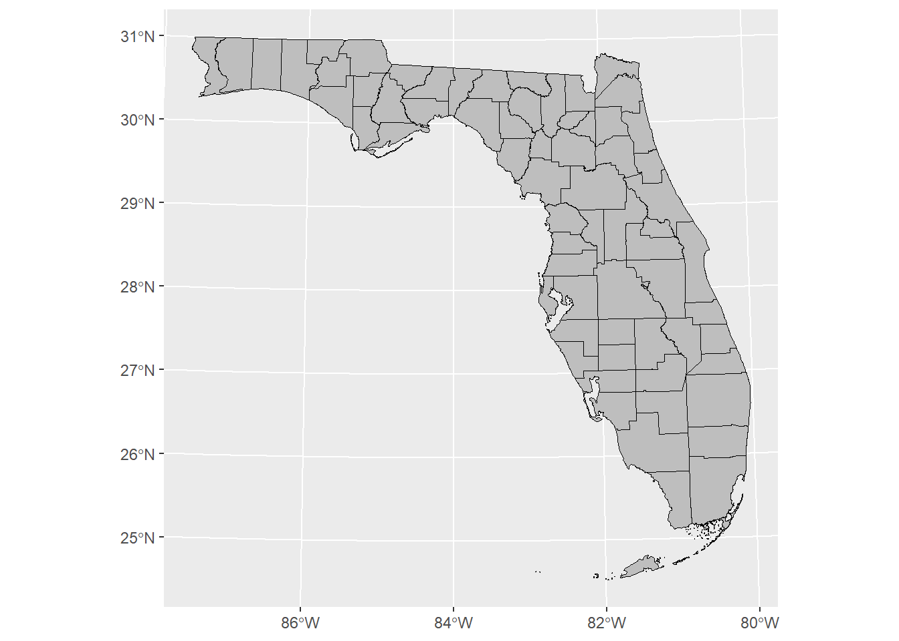
While the data are displayed on the plot in the requested coordinate system, the underlying .graticule (the grid lines and axis tick labels) default to longitude/latitude. To show the coordinates of the projected coordinate reference system, the argument datum can be used which controls the gridlines.
RspatialPkg::get_geom_sf(florida_counties_sf) +
ggplot2::coord_sf(crs = 3087, datum = 3087)5.5 Working with geometries
5.5.1 Shifting and rescaling geometry for national US mapping
Show the default geometries for the US states from the Census Bureau.
us_states_sf <- RcensusPkg::tiger_states_sf(
general = T,
resol = "20m",
sf_info = F,
output_dir = output_dir)Warning in file.remove(f): cannot remove file
'D:/Code_R/published/Techniques-in-Acquisition-Computation-and-Display-of-Census-Bureau-Data/shapefiles/tl_2020_us_county.zip',
reason 'Permission denied'RspatialPkg::get_geom_sf(
sf = us_states_sf,
panel_border_color = NA,
hide_x_tics = T,
hide_y_tics = T,
panel_color = "white"
)The plot does not work well, in part because the Aleutian Islands in far west Alaska cross the 180 degree line of longitude and are plotted on the opposite side of the map.
Use a coordinate reference appropriate for the United States such as the continental US Albers Equal Area projection (“ESRI:102003”).
RspatialPkg::get_geom_sf(
sf = us_states_sf,
panel_border_color = NA,
hide_x_tics = T,
hide_y_tics = T,
panel_color = "white"
) +
ggplot2::coord_sf(crs = "ESRI:102003")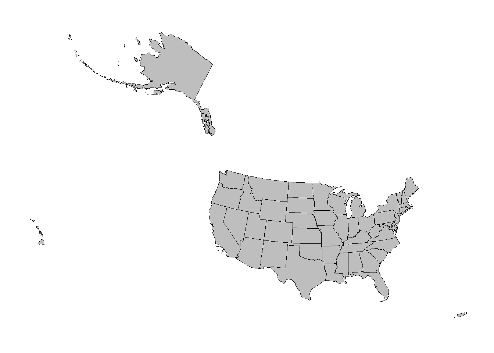
While this representation puts all territories in their appropriate locations, it is clearly not appropriate for Alaska, Hawaii, and Puerto Rico which appear distorted. This coordinate reference system is also not ideal for comparative mapping of states given the large amount of blank space between the states on the map.
Show the states representation using RcensusPkg::plot_us_data().
RcensusPkg::plot_us_data(
output_dir = output_dir,
title = "A Default Mapping of US States"
)Warning in file.remove(f): cannot remove file
'D:/Code_R/published/Techniques-in-Acquisition-Computation-and-Display-of-Census-Bureau-Data/shapefiles/tl_2020_us_county.zip',
reason 'Permission denied'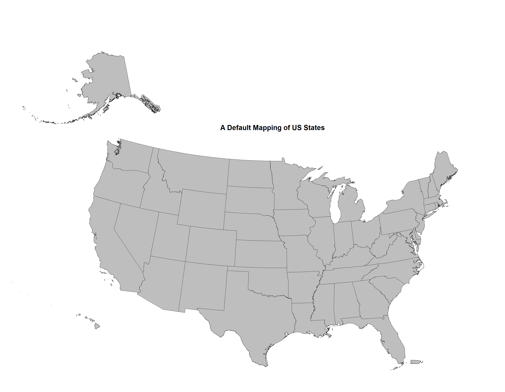
5.5.2 Converting polygons to points
Convert and map the polygon geometries of major Texas places to points.
Get the Texas state boundary lines:
texas_fips <- usmap::fips(state = "texas")
texas_express <- expression(STATEFP == texas_fips)
texas_sf <- RcensusPkg::tiger_states_sf(
express = texas_express,
general = T,
transform_crs = 6580,
sf_info = F,
output_dir = output_dir
)Warning in file.remove(f): cannot remove file
'D:/Code_R/published/Techniques-in-Acquisition-Computation-and-Display-of-Census-Bureau-Data/shapefiles/tl_2020_us_county.zip',
reason 'Permission denied'Get the Texas major places:
texas_fips <- usmap::fips(state = "texas")
major_places <- c("Dallas","Fort Worth","Houston","Austin","San Antonio","El Paso")
texas_places_express <- expression(NAME %in% major_places)
texas_places_sf <- RcensusPkg::tiger_places_sf(
state = texas_fips,
general = T,
express = texas_places_express,
transform_crs = 6580,
sf_info = F,
output_dir = output_dir
) %>%
data.table::as.data.table(.) %>%
.[, NAME := ifelse(NAME == "Fort Worth", "Dallas-Fort Worth", NAME)] %>%
sf::st_as_sf(.)Warning in file.remove(f): cannot remove file
'D:/Code_R/published/Techniques-in-Acquisition-Computation-and-Display-of-Census-Bureau-Data/shapefiles/tl_2020_us_county.zip',
reason 'Permission denied'RspatialPkg::get_geom_sf(
sf = texas_sf,
sf_fill = "yellow",
sf_stroke = 2.0,
hide_x_tics = T,
hide_y_tics = T,
panel_color = "white",
panel_border_color = "white"
) +
RspatialPkg::get_geom_sf(
sf = texas_places_sf,
sf_fill = "red",
sf_color = "yellow",
adding = T
) 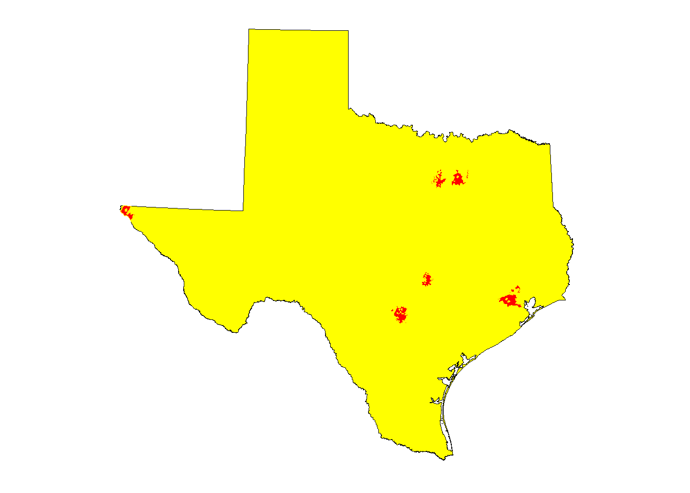
Convert the city polygon geometries to centroid points using sf::st_centroid():
texas_places_centroids_sf <- sf::st_centroid(texas_places_sf)Plot the centroid points over the outline of Texas and label the cities.
RspatialPkg::get_geom_sf(
sf = texas_sf,
sf_fill = "yellow",
sf_stroke = 2.0,
hide_x_tics = T,
hide_y_tics = T,
panel_color = "white",
panel_border_color = "white"
) +
RspatialPkg::get_geom_sf(
sf = texas_places_centroids_sf,
sf_fill = "red",
sf_color = "red",
sf_size = 3,
adding = T
) +
RspatialPkg::get_geom_sf(
sf = texas_places_centroids_sf,
aes_text = "NAME",
text_fontface = "bold.italic",
text_check_overlap = T,
# text_nudge_y = -120.3,
# text_nudge_x = 20,
adding = T
)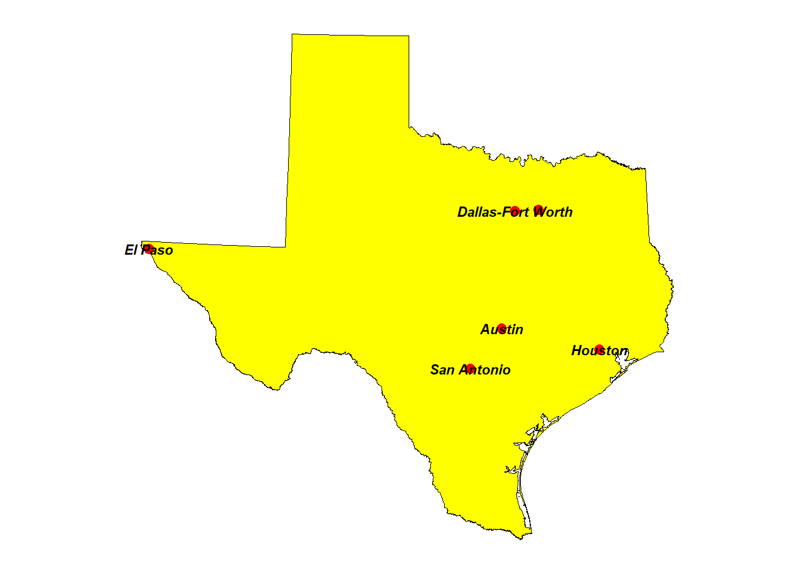
5.5.3 Exploding multipolygon geometries to single parts
Separate the MULTIPOLYGON geometry of Lee County, Florida into 4 separate POLYGON parts.
Get the MULTIPOLYGON geometry of Lee County, Florida and map it:
florida_lee_fips <- usmap::fips(state = "florida", county = "lee")
florida_fips <- substr(florida_lee_fips, 1,2)
lee_fips <- substr(florida_lee_fips, 3, 5)
lee_county_express <- expression(STATEFP == florida_fips & COUNTYFP == lee_fips)
lee_county_sf <- RcensusPkg::tiger_counties_sf(
express = lee_county_express,
general = T,
sf_info = F,
output_dir = output_dir
)Warning in file.remove(f): cannot remove file
'D:/Code_R/published/Techniques-in-Acquisition-Computation-and-Display-of-Census-Bureau-Data/shapefiles/tl_2020_us_county.zip',
reason 'Permission denied'RspatialPkg::get_geom_sf(
sf = lee_county_sf,
sf_fill = "#FF8C19",
hide_x_tics = T,
hide_y_tics = T,
panel_color = "white",
panel_border_color = "white"
)The Lee County polygon has four distinct parts or non-contiguous areas as shown in the above plot.
Using sf::st_cast() “cast” Lee County as a POLYGON object which will create a separate row for each non-contiguous area.
lee_singlepart_sf <- sf::st_cast(lee_county_sf, "POLYGON")
lee_singlepart_sfSimple feature collection with 4 features and 12 fields
Geometry type: POLYGON
Dimension: XY
Bounding box: xmin: -179.1467 ymin: -14.5487 xmax: 179.7785 ymax: 71.38782
Geodetic CRS: NAD83
STATEFP COUNTYFP COUNTYNS AFFGEOID GEOID NAME NAMELSAD STUSPS
1 12 071 00295758 0500000US12071 12071 Lee Lee County FL
1.1 12 071 00295758 0500000US12071 12071 Lee Lee County FL
1.2 12 071 00295758 0500000US12071 12071 Lee Lee County FL
1.3 12 071 00295758 0500000US12071 12071 Lee Lee County FL
STATE_NAME LSAD ALAND AWATER geometry
1 Florida 06 2022803068 1900583561 POLYGON ((-82.18358 26.6950...
1.1 Florida 06 2022803068 1900583561 POLYGON ((-82.22407 26.6029...
1.2 Florida 06 2022803068 1900583561 POLYGON ((-82.26248 26.6839...
1.3 Florida 06 2022803068 1900583561 POLYGON ((-82.27005 26.7895...Plot the Sanibel Island, Florida piece:
RspatialPkg::get_geom_sf(
sf = sf::st_as_sf(lee_singlepart_sf[2, ]),
sf_fill = "#FF8C19",
hide_x_tics = T,
hide_y_tics = T,
panel_color = "white",
panel_border_color = "white"
) +
coord_sf(crs = 3087, datum = 3087)